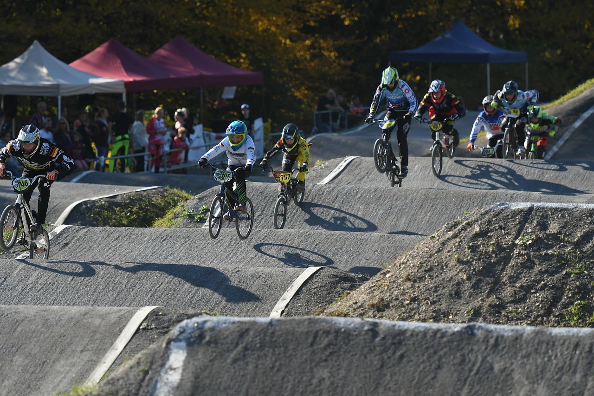

Oheisharjoittelusta Olympiaurheiluksi
BMX Racing on Californiasta Yhdysvalloista peräisin laji, joka on kehitetty -60 luvun lopulla. Laji motocrossista kiinnostuneiden lasten edulliseksi ja tehokkaaksi harjoittelu muodoksi. BMX Racing rata muistuttaa huomattavan paljon motocrossrataa ja lajia kutsutaan suomeksi pyöräkrossiksi. BMX radassa on lähtömäki, hyppyrisuoria sekä kallistetut kaarteet. Hyppysuorilla olevat hyppyrit ovat profiililtaan pyöreitä, jolloin niiden yli on mahdollista myös rullata yli. BMX Racing pyörää ajetaan seisaallaan. Radalle lähdetään lähtöportista, jossa on radasta riippuen paikat 4–8 kuskille kerrallaan. Radalla olevista kummuista saadaan vauhtia ajoon niin sanotusti pumppaamalla pyörää jalkojen ja käsien avulla. Taitavavimmat kuskin ylittävät kumpuja manuaalilla, eli eturengas ilmassa, tai näyttävien hyppyjen avulla. BMX Racing on ollut olympialaji vuodesta 2008 lähtien.
